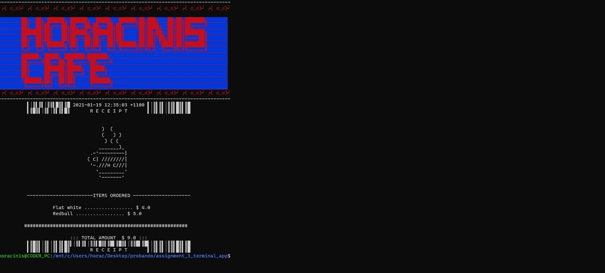

Ruby Terminal App
Repository on GitHub: https://github.com/HORACINIS/assignment_3_terminal_app
Instructions:
1.- Run 'bundle install', to install the Gem dependencies.
2.- In the CLI, from the app directory, run 'ruby app.rb'
Horacinis Café is an interactive app for ordering take away beverages.
The user, after selecting the desired beverages will be shown a receipt with a list items and the total amount.